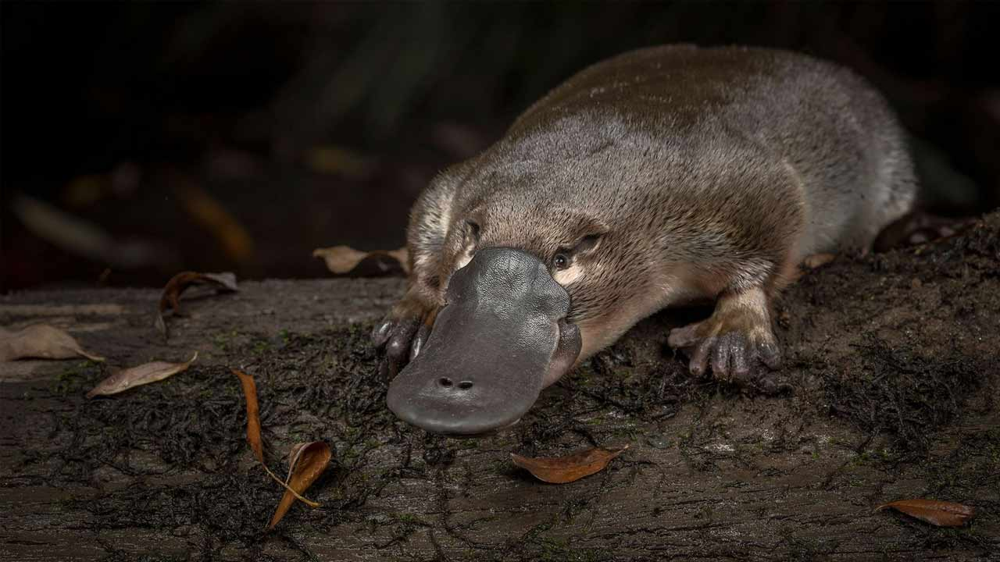
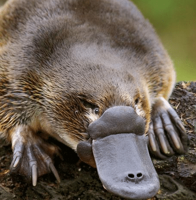
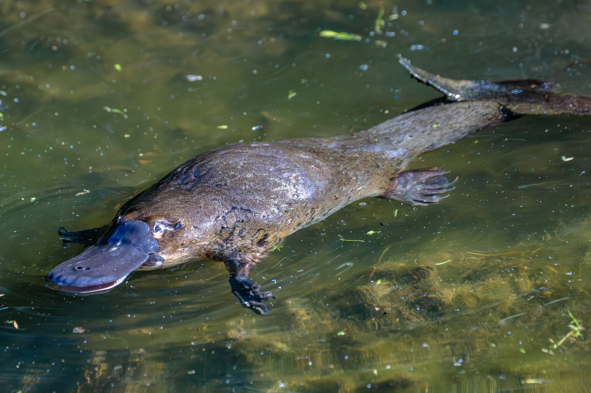

El ornitorrinco (Ornithorhynchus anatinus) es uno de los mamíferos más antiguos del planeta, con fósiles que datan de hace más de 100 millones de años. Este monotremado, que pone huevos, es un enlace vivo entre reptiles y mamíferos, mostrando una evolución única.
El ornitorrinco es conocido por su pico en forma de pato, patas palmeadas y capacidad de detectar campos eléctricos. Además, los machos poseen un espolón venenoso en las patas traseras, una rareza entre mamíferos.
Habita en ríos y arroyos del este de Australia y Tasmania. Su hábitat está amenazado por la contaminación y el cambio climático, lo que hace crucial su conservación para proteger esta especie única.
